Surat Tugas dari Kepala Sekolah
Kemarin kamu sudah jago menghitung listrik rumah. Hari ini rumahnya diganti satu sekolah, dan datanya tidak serapi kemarin!
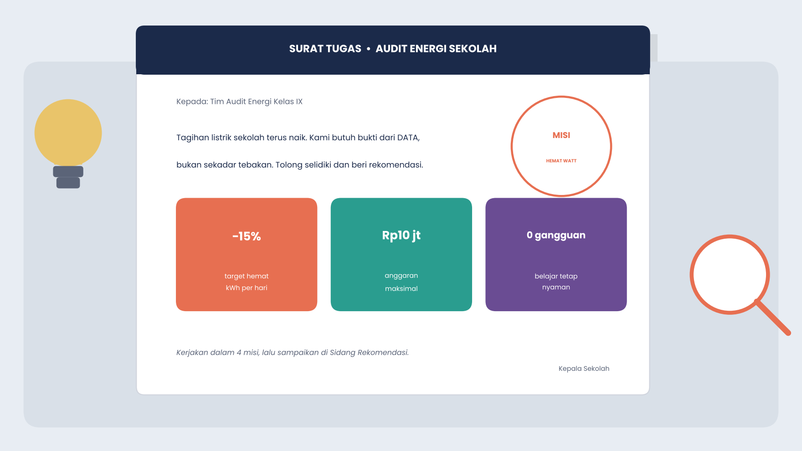
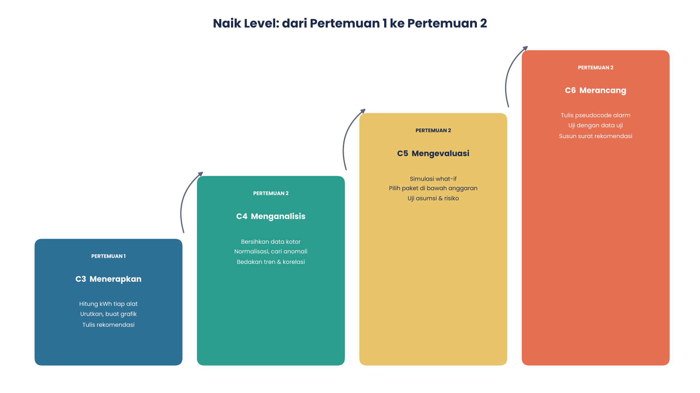
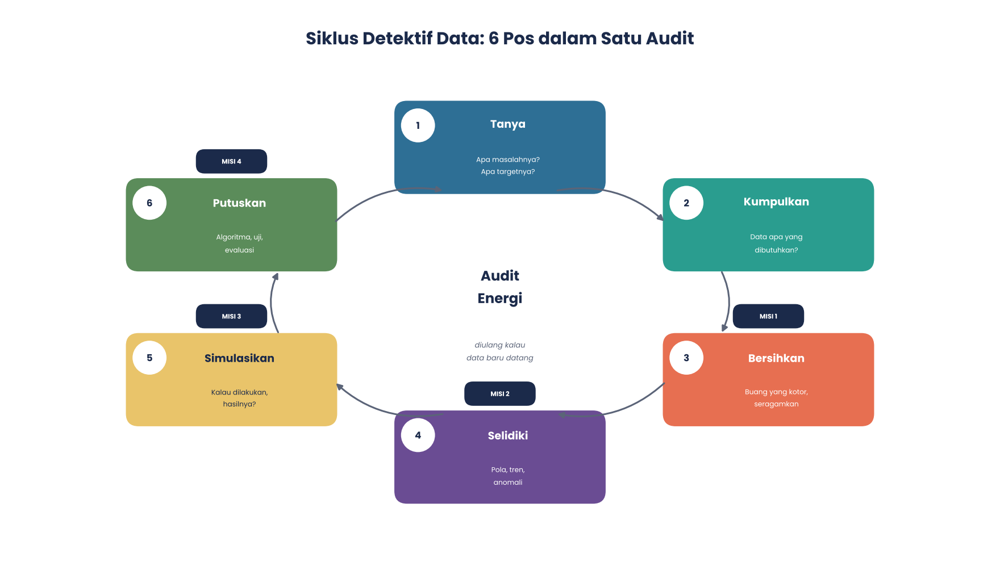
1Misi 1: Bersihkan Data
Petugas mencatat angka meter Lab Komputer selama dua minggu. Catatannya berantakan. Ada lima jenis data kotor:
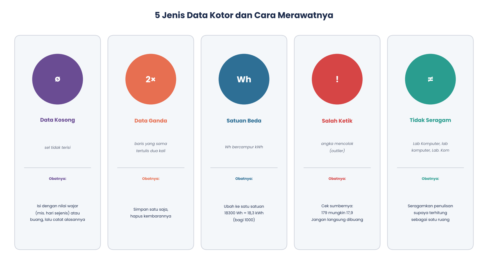
Lab 1: Pilih tindakan untuk tiap baris
Untuk setiap baris, pilih tindakan yang menurutmu paling tepat. Lalu klik Cek & hitung. Kolom kWh dalam satuan kWh.
| No | Ruang | Hari | Isi | Tindakanmu | Hasil |
|---|
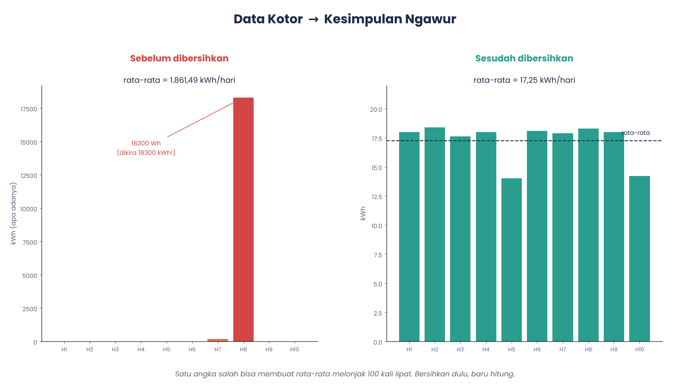
2Misi 2: Selidiki Pola
Total terbesar belum tentu paling boros. Coba bandingkan dua cara melihat data yang sama.
Lab 2A: Total vs per hari efektif
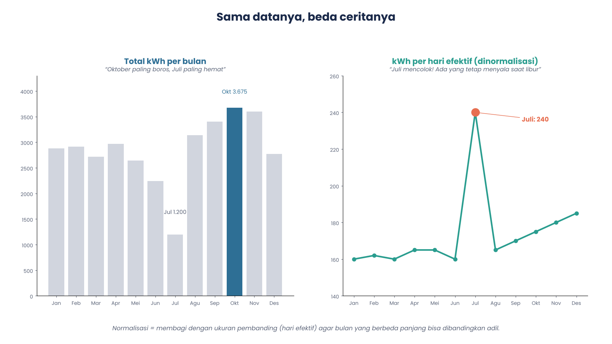
Lab 2B: Tebak anomalinya
Pada grafik per hari efektif, bulan mana yang menyimpang jauh?
Lab 2C: Kalkulator normalisasi
Bandingkan dua bulan: dan
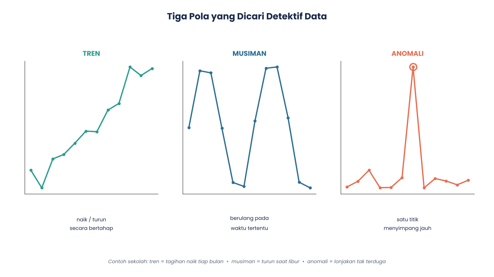
Lab 2D: Naik bersamaan, saling menyebabkan?
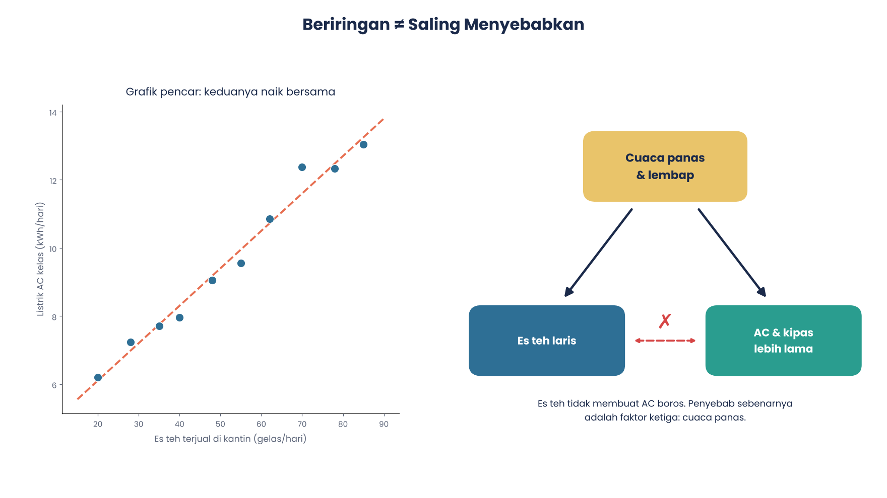
3Misi 3: Simulasi What-If
Kondisi sekarang 180 kWh/hari efektif. Target hemat 15% (27 kWh/hari) dengan anggaran maksimal Rp10.000.000.
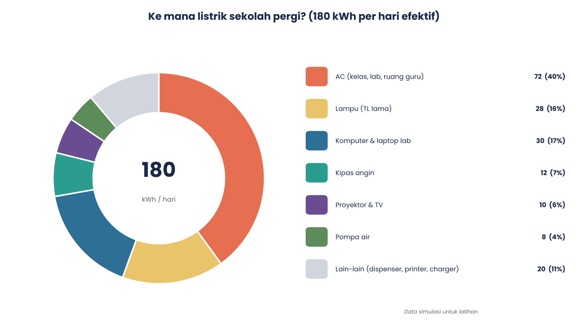
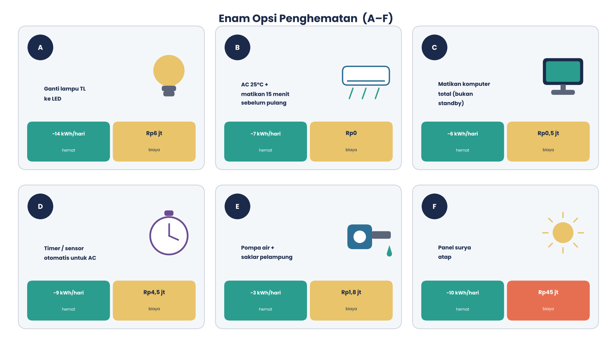
Lab 3: Susun paketmu
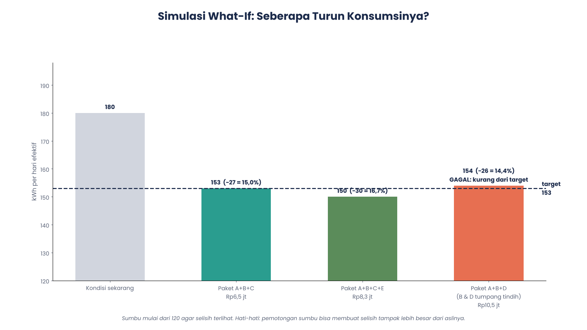
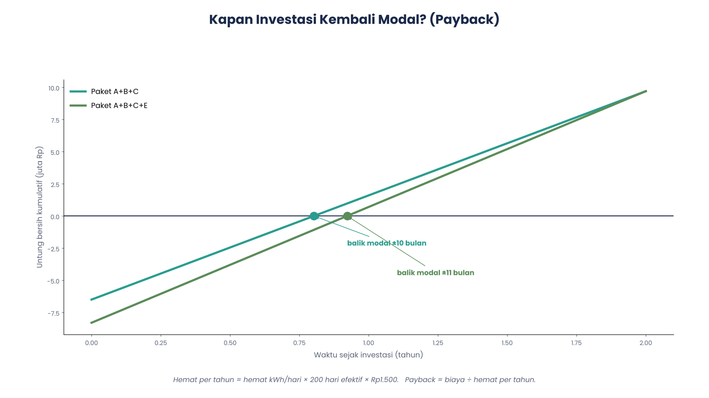
4Misi 4: Rancang Alarm Boros
Alarm menilai pemakaian listrik harian. Algoritmanya ditulis dalam pseudocode, lalu diuji.
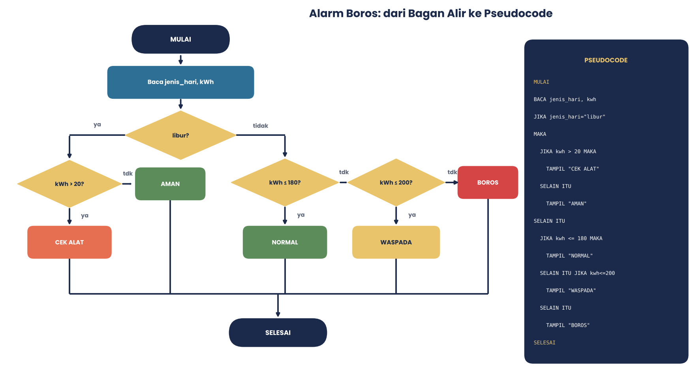
Lab 4: Jalankan seperti komputer
Jenis hari: kWh:
| # | Hari | Jenis | kWh | Seharusnya | Hasil algoritma |
|---|
Sidang Rekomendasi
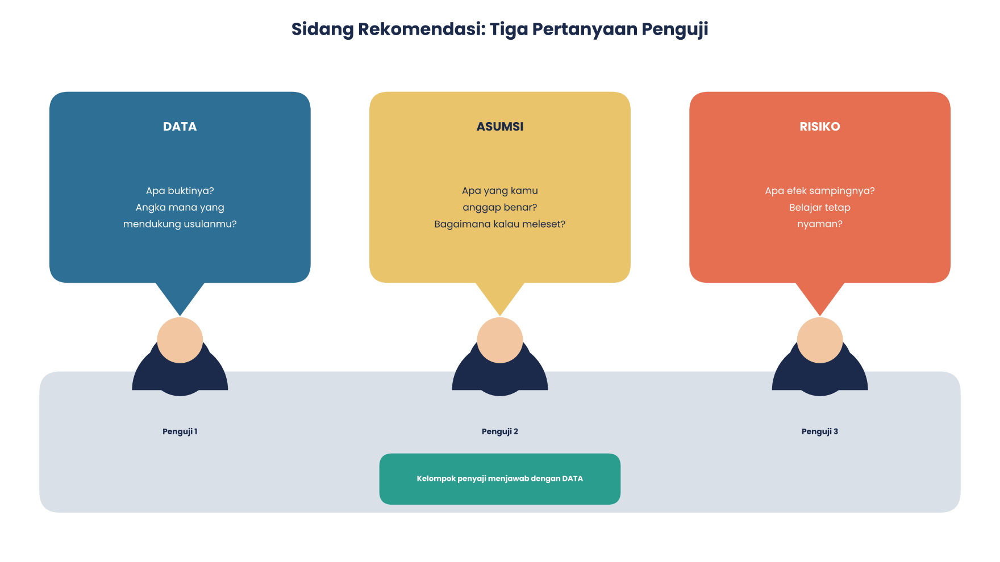
- Temuan: tiga bukti angka (rata-rata bersih, anomali Juli, tren naik).
- Rekomendasi: paket, total hemat, biaya, payback.
- Asumsi dan risiko: termasuk uji kepekaan 90%.
- Evaluasi: bagaimana kita tahu berhasil?
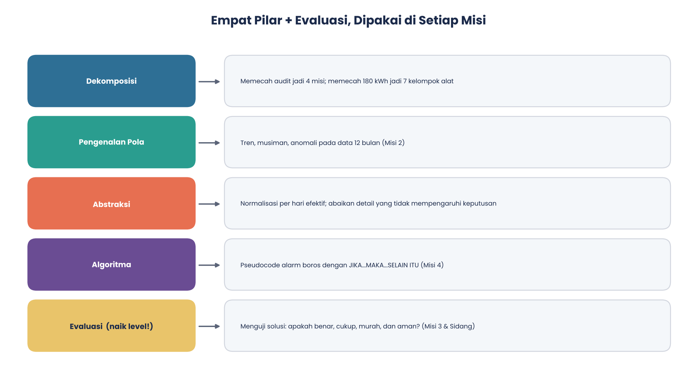
Kuis Akhir (10 soal)
Pilih jawaban, penjelasan langsung muncul. Skormu: 0 / 10